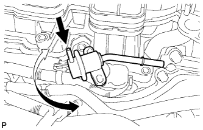

FUEL PRESSURE REGULATOR > INSTALLATION |
| 1. INSTALL FUEL PRESSURE REGULATOR ASSEMBLY |
Apply a light coat of gasoline or spindle oil to a new O-ring and install the O-ring to the pressure regulator.
|  |
While turning the pressure regulator left and right, install it to the delivery pipe.
Install the 2 bolts.
Connect the No. 1 air hose to the pressure regulator.
Connect the No. 2 fuel tube to the pressure regulator (Click here).
| 2. CONNECT CABLE TO NEGATIVE BATTERY TERMINAL |
| 3. INSTALL AIR CLEANER CAP AND HOSE |
 |
Attach the 4 clamps to install the air cleaner cap and hose.
| *1 | Air Cleaner Hose |
| *2 | Throttle Body |
| *3 | Groove |
| *4 | Protrusion |
| *a | Upper Side |
| *b | Front |
Tighten the hose clamp.
Connect the mass air flow meter connector, No. 1 air hose and No. 2 ventilation hose and attach the wire harness clamp.
| 4. INSTALL V-BANK COVER SUB-ASSEMBLY |
 |
Attach the 2 V-bank cover hooks to the No. 1 V-bank cover bracket. Then align the 2 V-bank cover grommets with the 2 pins and press down on the V-bank cover to attach the pins.
| *1 | Pin |
| *2 | Grommet |
| *3 | Hook |
| *4 | No. 1 V-bank Cover Bracket |
| 5. INSPECT FOR FUEL LEAK |
Make sure that there are no fuel leaks after performing maintenance on the fuel system.
Connect the intelligent tester to the DLC3.
Turn the engine switch on (IG) and turn the intelligent tester on.
Enter the following menus: Powertrain / Engine and ECT / Active Test / Control the Fuel Pump / Speed.
Check that there are no leaks from the fuel system.
If there are fuel leaks, repair or replace parts as necessary.
Turn the engine switch off.
Disconnect the intelligent tester from the DLC3.